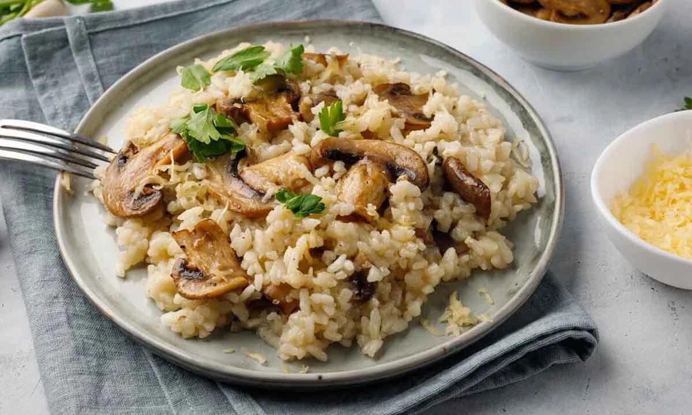
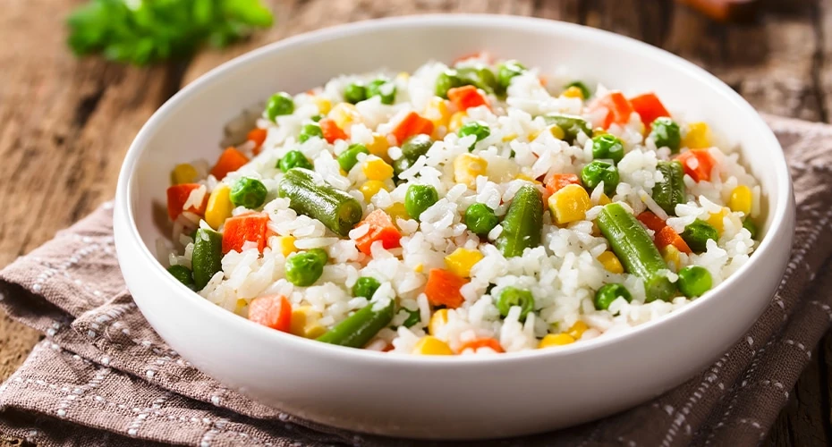

Lasaña

Descripción
Para esta receta, básicamente preparamos una salsa de tomate espesa y carnosa, y la cubrimos con fideos y queso en capas para hacer una cazuela.
Ingredientes
- - 1 Cucharada de aceite vegetal.
- - 1 Libra de carne molida de res.
- - 1/2 Taza de cebolla blanca picadita.
- - 1/2 Taza de pimiento morrón, rojo picadito.
- - 1/2 Cucharadita de orégano.
- - 2 Sobres de Caldo en Polvo Gallinita con Tomate Maggi.
- - 1 Taza de agua.
- - 1 Cucharada de mantequilla.
- - 1 Taza de Crema De Leche Nestlé.
- - 1 Sobre de Caldo en Polvo Gallinita Maggi.
- - 1/4 Cucharadita de nuez moscada.
- - 1/2 Libra de queso mozzarella fresco, desmenuzado.
- - 1/2 Libra de lasaña o 9 hojas hervidas con sal.
Pasos
-
Paso 1:
En una sartén, vierte el aceite, sofríe la carne hasta que esté gris, agrega la cebolla, ají morrón, orégano y los sobres de Caldo en Polvo Gallinita con Tomate Maggi, cocina por 1 minuto, agrega el agua y cocina hasta secar, reserva.
-
Paso 2:
En una olla, añade la mantequilla, la Crema de Leche Nestlé, el sobre de Caldo en Polvo Gallinita Maggi y la nuez moscada, mezcla bien, calienta y reserva.
-
Paso 3:
En un molde para horno, vierte una capa de salsa para cubrir el fondo, coloca una capa de lasaña, añade la mitad de la carne, luego esparce un poco de queso mozzarella, repite este proceso hasta terminar con queso mozzarella y parmesano. Lleva al horno previamente precalentado a 350°F y hornea por 25 a 30 minutos. Deja refrescar por 5 minutos y sirve.
Pasta con Queso y Hongos

Descripción
Esta es una pasta con champiñones deliciosa y jugosa, para nada seca ni sosa, aunque no esté hecha con salsa de tomate o crema como esta Pasta Cremosa con Champiñones. Es mantecosa y con ajo, y es la magia de 6 ingredientes en su máxima expresión.
Ingredientes
- - 1/2 Libra de pasta hervida con sal.
- - 1 Cucharada de mantequilla.
- - 1 Taza de hongos lonjeados.
- - 1 Sobre de Caldo en Polvo Gallinita Maggi.
- - 1 Envase de Leche Evaporada Carnation Queso UHT 135ml.
- - 1/4 Taza de queso parmesano rallado.
Pasos
-
Paso 1:
Sofríe en la mantequilla los hongos, hasta que suelten sus líquidos y estén blandos, agrega el Caldo en Polvo Gallinita Maggi y luego la Leche Evaporada Carnation Queso, cocina por un minuto, retira del fuego, añade la pasta, mezcla bien y sirve con el queso parmesano.
Arroz Cremoso de Hongos y Pollo

Descripción
Este exquisito plato combina pechugas de pollo sazonadas con romero, tomillo y orégano, cocidas junto con arroz cremoso y hongos en una mezcla de crema de leche y vinagre balsámico. Con un toque final de parmesano y espárragos, evoca la sofisticación de la cocina italiana moderna, ideal para una cena elegante.
Ingredientes
- - 2 Cucharadas grandes Mantequilla.
- - 1 Pechuga de Pollo, picada en cubos.
- - 1 Cucharada grande Aceite De Oliva.
- - 1 Cucharada grande Sazón Completo Maggi.
- - 1/2 Cebolla Blanca, picadita.
- - 200 Gramos Hongos, rebanados.
- - 1 Taza Arroz blanco.
- - 2 Unidades Ajo.
- - 1 Sobre Caldo en Polvo Gallinita Maggi.
- - 1 Taza Agua.
- - 1 Taza Crema De Leche Nestlé.
- - 2 Cucharadas grandes Puerro.
- - 2 Cucharadas grandes Queso Parmesano, rallado.
Pasos
-
Paso 1:
Sazona el pollo con la cucharada de Sazón Completo Maggi y aparta.
-
Paso 2:
En una olla o sartén profunda agrega la mantequilla y el aceite de oliva, cocina los hongos, cuando estén dorados agrega el ajo y la cebolla sofriendo todo durante unos 5 minutos.
-
Paso 3:
Agrega el pollo y cocina hasta que esté bien dorado. Incorpora el arroz y séllalo, vierte la taza de agua y deja cocinando hasta que se absorba. Agrega la taza de Crema De Leche Nestlé y sigue cocinando durante unos 10 minutos. Agrega el sobre de Caldo en Polvo Gallinita Maggi y cocina hasta que el arroz tenga la textura de tu preferencia.
-
Paso 4:
Termina agregando queso parmesano y puerro fino picadito.
-
Paso 5:
Sirve de inmediato.
Arroz con Vegetales al Vapor

Descripción
El arroz vaporizado es una variedad de arroz blanco que ha sido sometido a un proceso de vaporización antes del pulido. Este proceso implica exponer los granos de arroz al vapor antes de retirar la cáscara exterior, lo que ayuda a retener más nutrientes en el grano.
Ingredientes
- - 1 Cucharada grande Aceite De Oliva.
- - 1 Unidad Ajo picado.
- - 1 Taza Cebolla Blanca picada.
- - 2 Unidades Pimientos Morrones o 1 Ají Dulce pequeño, finamente picados.
- - 1 Taza Zanahorias rallada.
- - 1 Taza Tayota rallada.
- - 2 Unidades Puerro finamente picado (Tallos).
- - 1 Palo Apio finamente picado (Tallo).
- - 2 Tazas agua caliente.
- - 2 Tazas Arroz Largo.
- - 2 Tabletas Caldo De Gallina Mi Sabor Maggi.
Pasos
-
Paso 1:
Vierte el aceite en una olla de fondo grueso. Saltea por 3 minutos el ajo, la cebolla, los pimientos, la zanahoria, la tayota, el puerro y el apio.
-
Paso 2:
Agrega el resto de los ingredientes, mezcla bien y deja hervir, tapa, reduce fuego y cocina de 15 a 20 minutos. Sirve de inmediato.